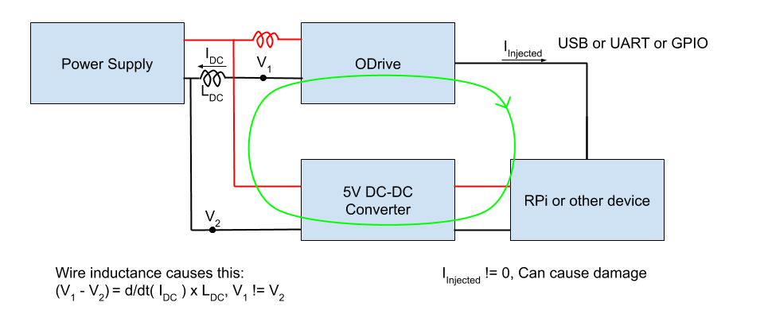

Ground Loops
For electrical devices to communicate, most of the time they require a common ground connection. Best practice is to connect the grounds back to a single point, called a “star ground”. If there are multiple paths to ground, a “ground loop” is formed. Ground loops and wire inductance can cause issues for high current electronics like ODrive. As an example of what can go wrong, look at the diagram below.
The Problem
{kind=link}
The issue is the inductance of the power wires between the ODrive and power supply. The inductance and the high current drawn by the ODrive causes V_1 to not be the same as V_2. If the voltage caused by the wire inductance and current is high enough, the 0-5V gpio signals can swing much higher or lower than the normal 0-5V range. This causes a current to flow through the ODrive GPIO pins.
Solutions
Reduce Power Wire
All wires have some amount of inductance. The inductance is proportional to the length of the wires and the area of the loop formed by the positive and negative power wires. It is beneficial to keep those wires as short as possible and as close together as possible. This reduces the effect of the problem but does not eliminate it!
Isolation
To fix this, the ground loop must be broken. This can be achieved by isolating the power supplies (no common V-) and connecting a signal ground between the RPi and ODrive. An example of this is a single ODrive connected to a battery and a device like a RPi connected to a mains power supply or different battery. If more than one ODrive is in use and they share a power supply, you have a ground loop again.
The best way to fix this is to isolate the data connection between the RPi and ODrive(s). The diagram below illustrates where the isolator should go.

By isolating the data connection (whether it is GPIO, USB, or UART), the ground loop is broken. Isolation can be achieved by using a USB isolator or a signal isolator for GPIO connections.
Here are some examples of USB isolators:
These are generic devices. If Aliexpress is not an option for you, you can probably find them available in your area from a different vendor. In the US, these types of isolators are available from Amazon and Ebay.
For GPIO connections, like UART, Step/dir, PWM, etc, you can use signal isolators like the ISO7762F from Texas Instruments. Keep in mind that isolators have a speed limit. Devices like optocouplers might be too slow for UART connections or Step/direction. Check the datasheet!
Current Limiting
If isolators are not an option, you can use series resistors to limit the injection current to a safe level. Place a resistor on the recieving side of all connections to or from the ODrive GPIO pins. 4.7kOhms is a good value, but anything from 3.3kOhms to 10kOhms should work. Series resistors offer some protection for the ODrive, but the ground loop problem can still cause the GPIOs to be pulled high or low for short periods of time. The ODrive and your other device will most likely be safe but communications might be interrupted.
As an example, for UART, you would place a resistor close to the RX pin of the ODrive and another one close to the RX pin of the other device (like an Arduino). This allows the driving side, the TX pins, to adequately drive the bus capacitance.